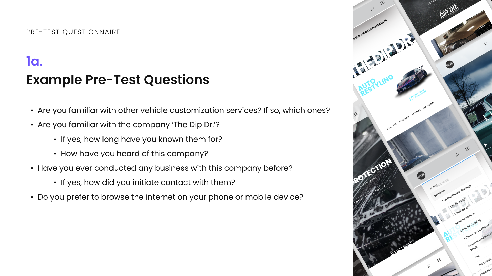
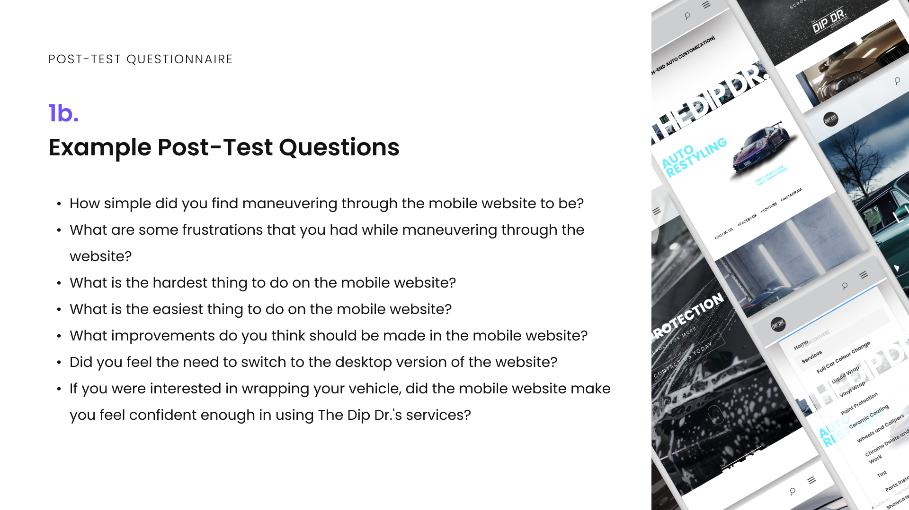
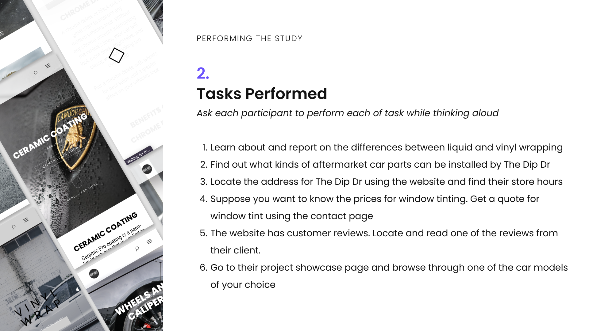
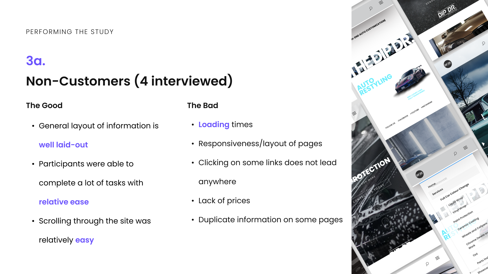
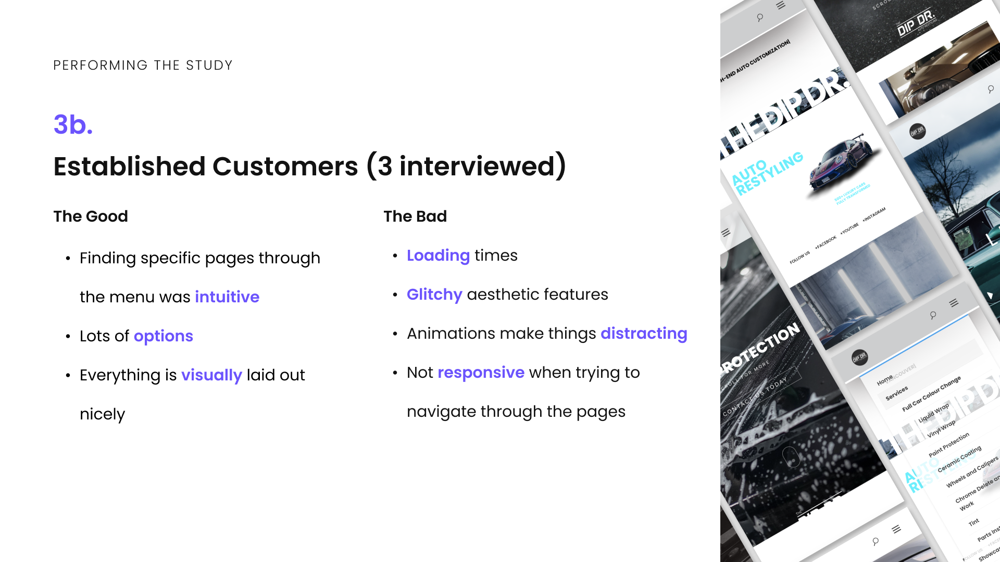
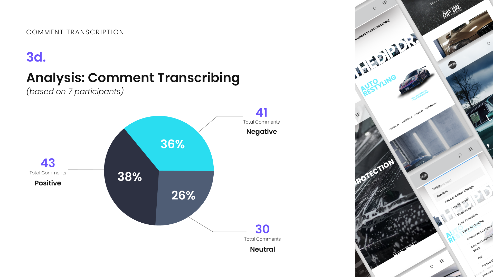
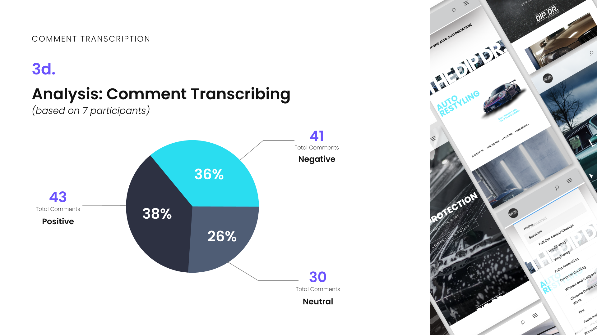
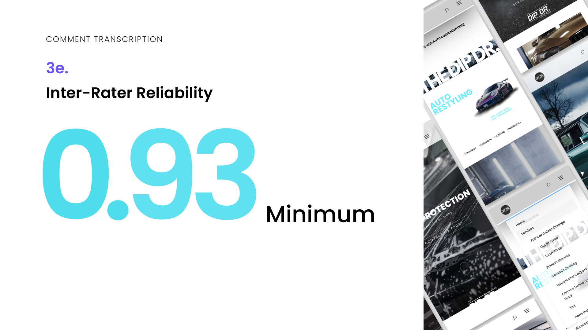
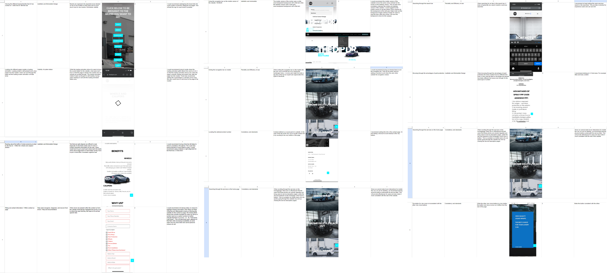
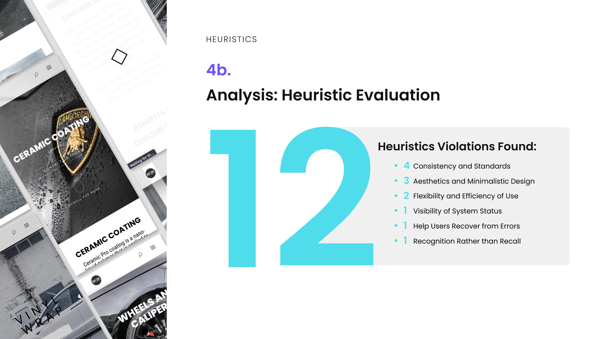

The Dip Dr.
The Dip Dr. is a Vancouver-based company that specializes in automotive restyling. This includes services such as vinyl vehicle wraps, ceramic coats, bodykit installation, paint protection films, and so on.
For a Design Evaluation class' final project, my team and I worked with The Dip Dr. to conduct a usability-focused evaluation of their website.
project overview
Context
4-week long project as part of an upper level design evaluation course
My role
Heuristic evaluations, UX research, copywriting
Tools
Figma
Team
Nick Cheung, Lynnsey Ong, Tanya Boutros, Tahmid Hafiz
background
Why was a design intervention needed?
After meeting Jordan, the owner of the company, we learned that he was unsure if his mobile website was up to par with the desktop version. He stated that this was important as the website is the main source of client communication and transactional flow, and that anecdotally, most users who try to use his website end up switching to the desktop version.
preparation
Study Plan
Our goal for the study plan was to conduct a usability study by having participants go through the mobile version of TheDipDr.com. We wanted to interview 3-5 non-customers and 3-5 existing customers to track the expectations and habits of current versus prospective clients.
Pre-Test Questionnaire
We created a pre-test questionnaire as a way to further categorize the participants in our study. This was done by asking a range of questions that determined their understanding of vehicle customization and familiarity with TheDipDr themselves.
Post-Test Questionnaire
A post-test questionnaire was created so that we could have a list of standardized qualitative data to compare the experiences of each user.
performing the study
Tasks
We decided to conduct a think-aloud usability study over Discord by having our users go through the mobile website while performing a series of tasks while being voice recorded. These were designed to test the experience of accessing some of the most popular services that The Dip Dr. offers.
What we noticed
During the think aloud study, we heard a number of positive and negative comments that were repeated by both of our participant groups. These provided starting points for us to begin our analysis and design propositions.
 analyzing the data
Transcription
We trascribed each of the comments made by our interviewees for both qualitative and quantitative analysis for a total of 114 entries. These were categorized as positive, neutral, or negative comments.
 

Validity
For validity, we had two separate members categorize each set of transcriptions to compare the inter-rater reliability (IRR). This resulted in an IRR of 0.93, meaning our results can be considered reliable.
heuristic evaluations
Heuristic Evaluations
Since our user testing did not reveal too much insight, we decided to conduct a heuristic evaluation to allow us to gather more informative and conclusive data to build upon.
Heuristic Recommendations
Our heuristic evaluation yielded 12 violations. Of them, we decided to focus on the three that were most prominent (especially when in comparison to our usability testing), for which we created detailed recommendations.
Although these problems and solutions can be considered rather minor, the impact they had on usability and overall user experience was significant. Creating a formal list of these problems, breaking them down, and providing recommendations allowed us to propose a more convincing report for our client to follow.

reflection
This final project was a great way for my team and I to gain experience working with real-world clients. In particular, this project and course as a whole helped me learn how to integrate formal usability studies, controlled experiements, interviews, analytically-based evaluations, heuristic evaluations, and overall scientific analysis with design.